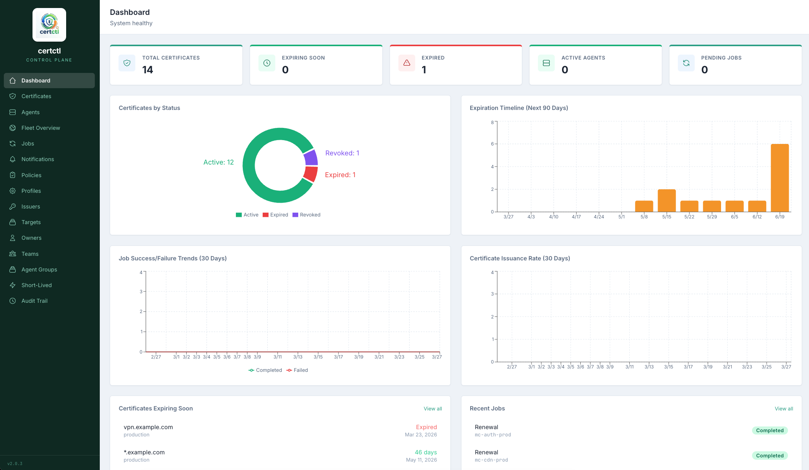
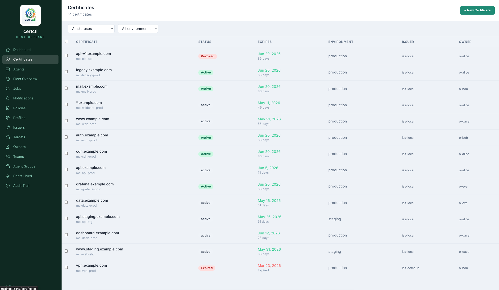
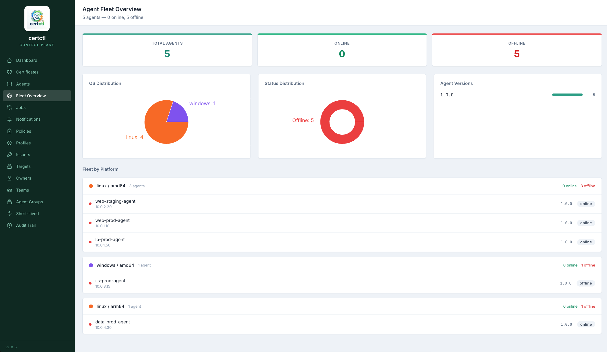
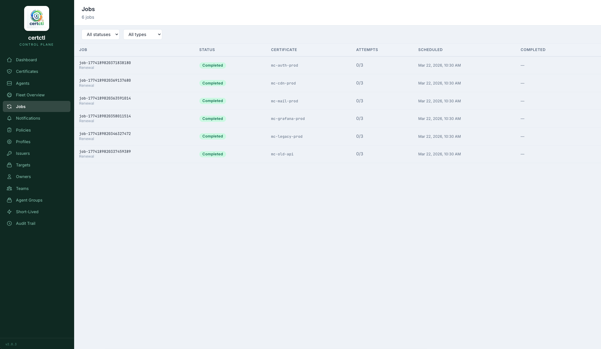

step 01
Deploy the control plane
Single Docker Compose stack: certctl-server, agent registry, Postgres. Self-signed bootstrap TLS by default; bring your own ACME / sub-CA cert when you’re ready.
$ docker compose up -d
The CA/Browser Forum’s SC-081v3 ballot caps public TLS certificates at 200 days by March 2026, 100 days by 2027, and 47 days by 2029. A team managing 100 certificates ships 7+ renewals per week. Forever. Manual workflows are a math problem, not a tooling preference.
certctl automates the entire certificate lifecycle — issue, deploy, monitor, renew, revoke — across every server in your fleet. Any CA. Any target. Self-hosted. Free.

01 / why self-hosted
Cloud certificate platforms route your enrollment traffic through their infrastructure, store your private CA keys on their hardware, and bill per certificate. Cheapest enterprise tiers with reasonable features start around $80K/year. Your fleet grows; the bill grows.
certctl handles the same lifecycle on your hardware, under your control. Open core under BSL 1.1. No per-cert pricing. No per-agent fees. No per-feature gates. The architecture is pull-only — the control plane never reaches into your network. Agents poll for work; private keys never leave the host.
Your keys. Your hardware. Your data. Your terms. — self-hosted, by design
02 / how it works
The control plane runs anywhere Docker does. Agents install with a single curl. The dashboard ships in the same container. Pull-only architecture — the server never reaches into your network.
Single Docker Compose stack: certctl-server, agent registry, Postgres. Self-signed bootstrap TLS by default; bring your own ACME / sub-CA cert when you’re ready.
Agents poll the server, generate keys locally, and submit CSRs. Private keys never leave the host. Single binary; works on Linux, macOS, Windows, ARM, x86.
35-page web UI for cert inventory, agent fleet, issuance pipelines, audit trail, and policy management. Plus REST API, CLI, and an MCP server for agentic workflows.
03 / capabilities
A real cert lifecycle is more than ACME. certctl ships the full stack: discovery, issuance, deployment, monitoring, revocation, alerting, audit. Every connector is pluggable; every interface is documented.
ACME (Let’s Encrypt, ZeroSSL, Google Trust Services), step-ca, OpenSSL, Local CA, AWS ACM PCA, DigiCert, Entrust, GlobalSign, EJBCA, Vault.
NGINX, Apache, HAProxy, Traefik, Caddy, Envoy, Postfix/Dovecot, F5 BIG-IP, IIS, Java keystore, Kubernetes Secrets, SSH, Windows cert store.
Filesystem scanning on agents. Network TLS probing across CIDR ranges. Cloud secret manager imports (AWS SM, Azure KV, GCP SM).
RFC 5280 CRL generation. RFC 6960 OCSP responder. Per-issuer signing keys. Cached responses. Short-lived cert exemption.
Slack, Microsoft Teams, PagerDuty, OpsGenie, email (SMTP), webhooks. Per-policy retry with exponential backoff. Audit-trail of every dispatch.
35-page React SPA. Prometheus metrics. Fleet overview, expiration heatmap, issuance pipelines, audit trail, policy editor.
EST (RFC 7030), SCEP (RFC 8894 + Microsoft Intune), ACME ARI (RFC 9702), ACME EAB, S/MIME, channel binding (RFC 9266), NIST PQC (planned).
~95 REST endpoints with OpenAPI spec. CLI for every operation. MCP server with 76 tools for AI-assistant integration. All optional, all auth-gated.
04 / positioning
Most certificate authority software issues X.509 certificates, maintains a CRL or OCSP responder, and hands you a PEM file. What happens next — deploying that PEM to your NGINX, watching it expire, renewing before it does, redeploying without downtime, verifying the new cert is actually live, alerting when something breaks — is your problem.
certctl is the layer that solves “what happens next.” It pairs with any CA backend you already use, or its own built-in Local CA for simple deployments and dev environments.
where most PKI tooling stops
where certctl picks up
First-class issuer connectors:
ACME (Let’s Encrypt, ZeroSSL, Google Trust Services, any RFC 8555
server), AWS Private CA, DigiCert, Entrust, GlobalSign, Google Cloud
CAS, HashiCorp Vault, OpenSSL, Sectigo, certctl’s own Local CA,
plus self-hosted EST (RFC 7030) and SCEP (RFC 8894) backends.
Pick whichever fits your environment. certctl handles everything around it.
05 / dashboard
The dashboard is the operator’s primary interface — but every action here has an equivalent CLI command and REST endpoint. Use whichever surface fits the workflow.



06 / community
certctl is BSL 1.1 source-available. The roadmap is public, the audit trail of every release is in git, and the maintainer’s Discussions are open to anyone with a GitHub account.
Q&A, feature requests, show & tell. The maintainer reads everything and usually responds within a day.
github.com/shankar0123/certctl/discussions →Bug reports, security disclosures, planned work — all public.
github.com/shankar0123/certctl/issues →Architecture, connector reference, deployment guides, API spec.
github.com/shankar0123/certctl#readme →